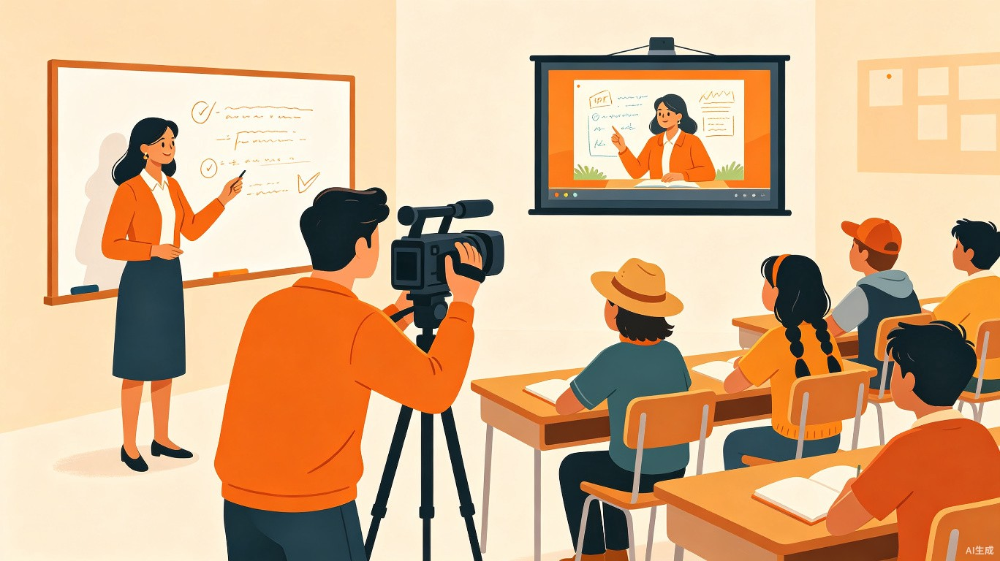

为谁而做
从课堂到自媒体，从城市到乡村，让每一位教育者都能轻松产出可视化课程。

目标用户
高中教师
快速把抽象概念变成课堂导入视频，让学生课前预习更直观。
备课
课堂导入
知识类 UP 主
批量生成系列短视频，保持日更或周更节奏，不再受素材和剪辑限制。
短视频
批量生产
教育 MCN / 在线教育团队
团队规模化生产课件视频，统一质量标准，降低内容制作成本。
规模化
成本控制
公益教育组织
为偏远地区制作低成本、高质量的可视化课程，促进教育普惠。
教育普惠
应用场景
01
课前预习视频
教师提前生成 5 分钟知识点讲解视频，发送给学生预习，课堂时间用于答疑和深化讨论。
02
考前复习冲刺
选定高频考点，一键批量生成复习短视频系列，帮助学生系统化回顾重点知识。
03
自媒体知识号
知识 UP 主选定知识点模板库，批量产出系列科普视频，日更不再是梦。
04
公益课程制作
公益组织低成本生成可视化课程，覆盖教育资源薄弱地区的教学需求。